suppressPackageStartupMessages({
library(VineCopula) # Copula analysis
library(ADGofTest) # Anderson-Darling Goodness-of-Fit test
library(KScorrect) # (Lilliefors-Corrected) Kolmogorov-Smirnov Goodness-of-Fit test
library(fGarch) # Time series analysis
})STAT0011
Decision and Risk
Z Score Calculator
Normal Distribution Calculator
Important Distributions
Continuous Distributions
Normal Distribution (Gaussian Distribution)
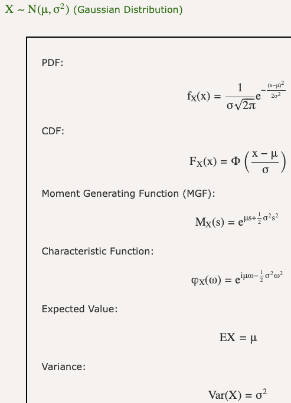
Uniform Distribution
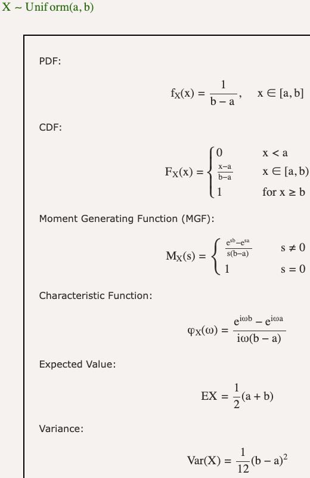
Gamma Distribution
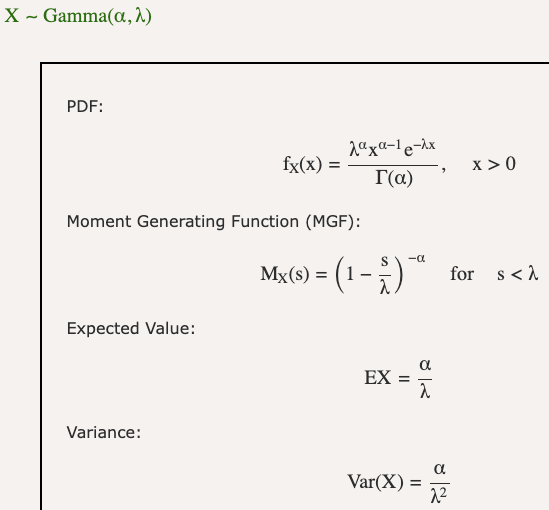
Copula Analysis Using R
Week 5 Data
Required Packages
Load the data and have a look:
load("week5data.RData")
plot(dataset)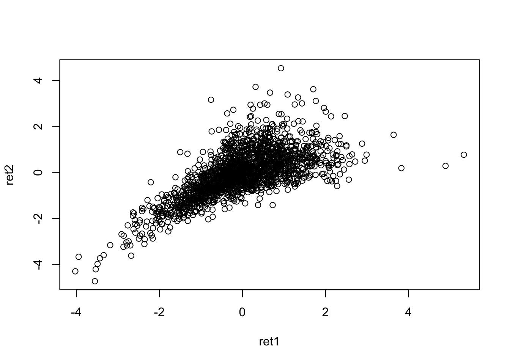
This does not look like a sample from a bivariate normal distribution! In fact, ret1 follows a Student-t distribution with 10 degrees of freedom (df); ret2 follows a Student-t distribution with 6 df. Let’s assume we have this information.
Next we apply Probability Integral Transform (PIT) to ret1 which has Student-t distribution with 10 df:
u1 <- pstd(dataset$ret1, mean = 0, sd = 1, nu = 10)
hist(u1)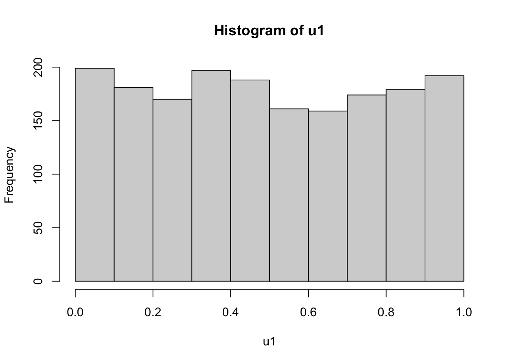
Implement Kolmogorov-Smirnov test:
KStest1 <- LcKS(u1, cdf = "punif")
KStest1$p.value[1] 0.3802Implement Anderson-Darling test:
ADtest1 <- ad.test(u1, null = "punif")
ADtest1$p.value AD
0.3243088 Then we apply Probability Integral Transform (PIT) to ret2 which has Student-t distribution with 6 df:
u2 <- pstd(dataset$ret2, mean = 0, sd = 1, nu = 6)
hist(u2)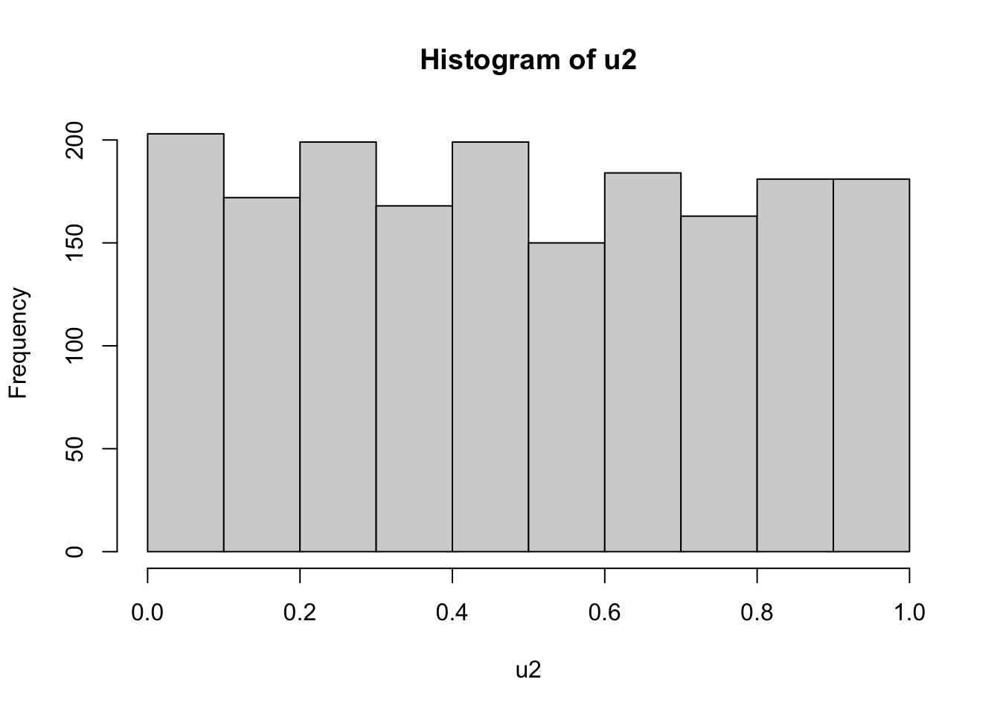
Implement Kolmogorov-Smirnov test:
KStest2 <- LcKS(u2, cdf = "punif")
KStest2$p.value[1] 0.2172Implement Anderson-Darling test:
ADtest2 <- ad.test(u1, null = "punif")
ADtest2$p.value AD
0.3243088 We pass the test for uniformity for both transformed log-returns, so we can proceed to copula modelling.
Using BiCopSelect function fit various copulas to the dataset and select the copula that provides the best fit based on the AIC criterion:
plot(cbind(u1, u2))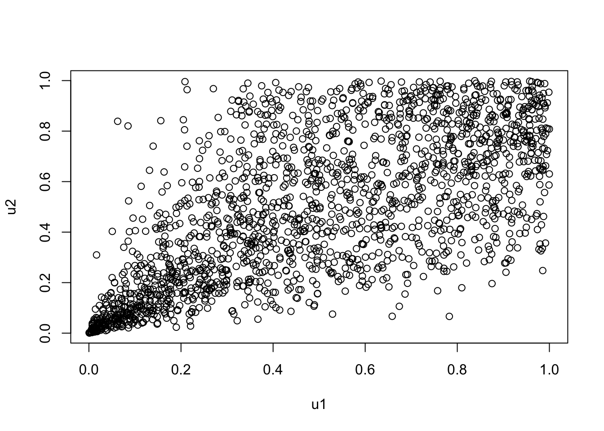
model <- BiCopSelect(u1, u2, familyset = NA, selectioncrit = "AIC", indeptest = TRUE, level = 0.05)
modelBivariate copula: Clayton (par = 1.94, tau = 0.49) The model of best fit is Clayton with the estimated parameter theta = 1.94.
Next we estimate the Value-at-Risk using the Monte Carlo simulation approach based on copula theory:
N <- 1800
set.seed(0123)
u_sim <- BiCopSim(N, family = 3, model$par) # family = 3 means ClaytonNext we apply the component-wise Inverse Probability Integral Transform (IPIT) to both ret1 and ret2.
ret1_sim <- qstd(u_sim[,1], mean = 0, sd = 1, nu = 10)
ret2_sim <- qstd(u_sim[,2], mean = 0, sd = 1, nu = 6)Note that our selected copula model is capable of generating values of log-returns with the observed dependence structure:
par(mfrow=c(2,1))
plot(dataset, ylab = "ret2", xlab = "ret1", col = "blue", main = "Original log-returns")
plot(data.frame(ret1_sim, ret2_sim), ylab = "ret2_sim", xlab = "ret1_sim",
col = "blue", main = "Simulated log-returns")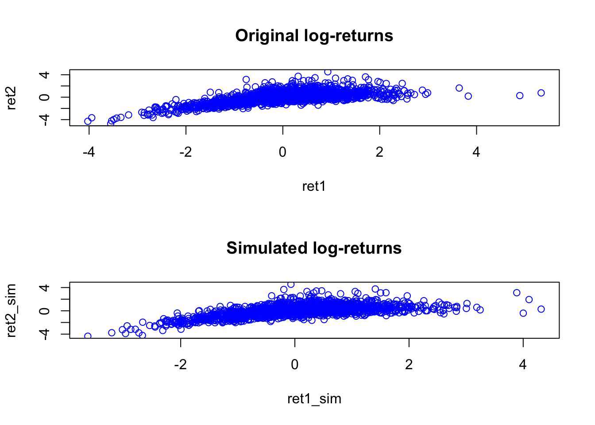
par(mfrow=c(1,1))Next, compute portfolio log-returns:
port_sim <- matrix(0, nrow = N, ncol = 1)
VaR_sim <- matrix(0, nrow = 1, ncol = 2)
port_sim <- log(1 + ((exp(ret1_sim) - 1) + (exp(ret2_sim) - 1)) * (1 / 2)) # Need to transform individual log-returns back to individual net returns, and compute portfolio net returns, finally compute portfolio log-returns.Return the estimated 99% and 95% Value-at-Risk estimates:
var_sim <- quantile(port_sim, c(0.01, 0.05))
var_sim 1% 5%
-2.244965 -1.512537 Time Series Analysis Using R
Week 6 Data
Required Packages
suppressPackageStartupMessages({
library(VineCopula) # Copula analysis
library(ADGofTest) # Anderson-Darling Goodness-of-Fit test
library(KScorrect) # (Lilliefors-Corrected) Kolmogorov-Smirnov Goodness-of-Fit test
library(fGarch) # Time series analysis
library(tseries)
})Load the data:
load("week6data.RData")
ret1 <- dataset[,1]
ret2 <- dataset[,2]Use the Jarque–Bera test, a goodness-of-fit test of whether sample data have the skewness and kurtosis matching a normal distribution:
jarque.bera.test(ret1)
Jarque Bera Test
data: ret1
X-squared = 54.62, df = 2, p-value = 1.379e-12jarque.bera.test(ret2)
Jarque Bera Test
data: ret2
X-squared = 888.08, df = 2, p-value < 2.2e-16Model for the Conditional Mean: AR Models - the Box-Jenkins Approach
Step 1: Identification
Returns 1
plot(ret1, type = "l")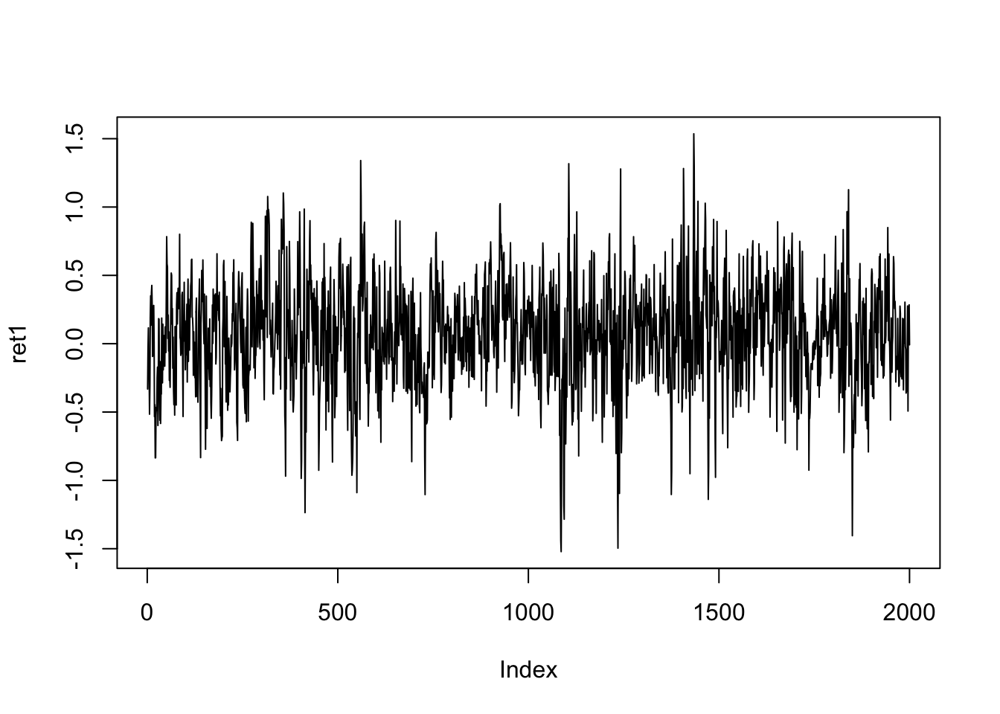
par(mfrow = c(2, 2))
acf(ret1, col = "green", lwd = 2)
pacf(ret1, col = "green", lwd = 2)
acf(ret1^2, col = "red", lwd = 2) # for GARCH effects
par(mfrow = c(1, 1))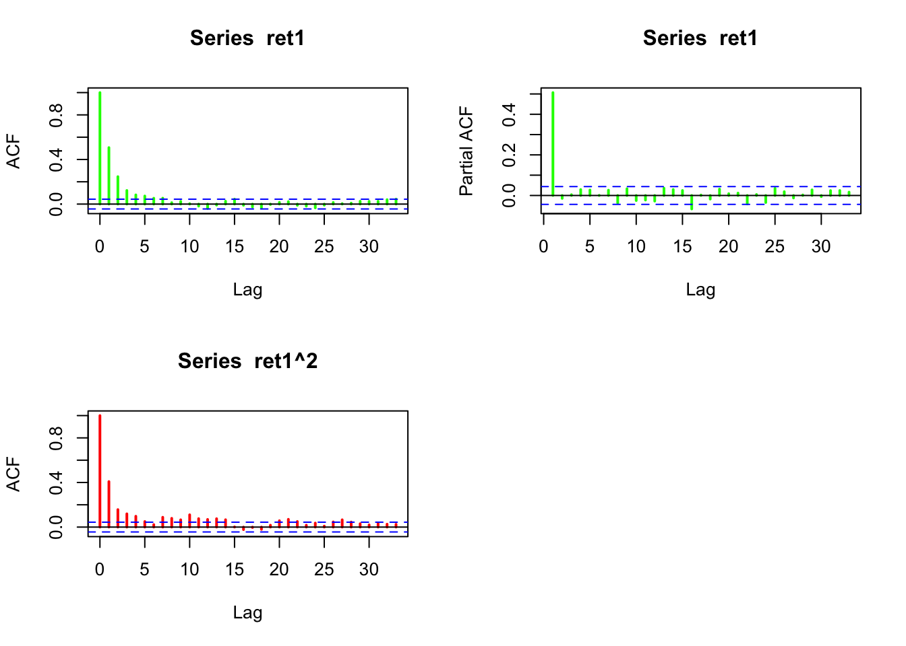
We can determine the lags of AR model via the Partial ACF plot.
We can use the ACF plot for the squared returns to see if we need to introduce GARCH effects, we need to try garch(1, 1) up until garch(3, 3).
Returns 2
plot(ret2, type = "l")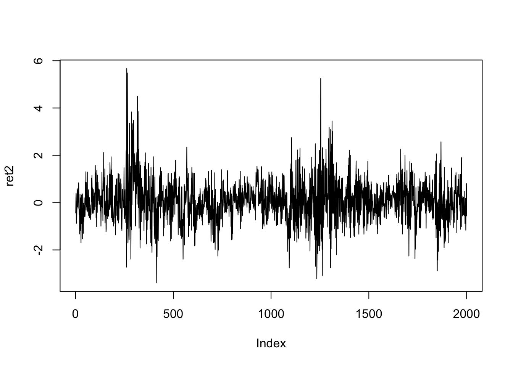
par(mfrow = c(2, 2))
acf(ret2, col = "green", lwd = 2)
pacf(ret2, col = "green", lwd = 2)
acf(ret2^2, col = "red", lwd = 2) # for GARCH effects
par(mfrow = c(1, 1))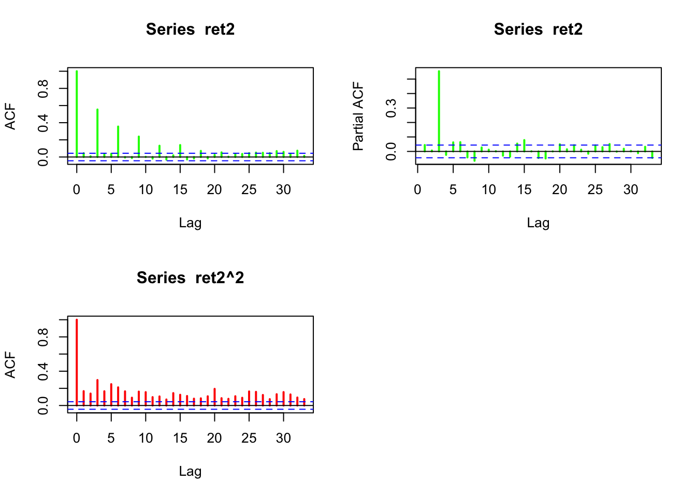
We can determine the lags of AR model via the Partial ACF plot.
We can use the ACF plot for the squared returns to see if we need to introduce GARCH effects, we need to try garch(1, 1) up until garch(3, 3).
Step 2: Estimation
model1 <- garchFit(formula = ~ arma(1, 0) + garch(1,1), data = ret1, trace = F, cond.dist = "norm")
model2 <- garchFit(formula = ~ arma(3, 0) + garch(1,1), data = ret2, trace = F, cond.dist = "norm")Note: this function uses all first three lags, not lag 3 only.
We can plot the histogram of ret1 and ret2 to decide the right distribution for argument cond.dist = . We also need to use Kolmogorov-Smirnov test and Anderson-Darling test (see later).
Step 3: Model Checking
Returns 1
res1 <- residuals(model1, standardize = TRUE)
par(mfrow = c(2, 1))
acf(res1, col = "green", lwd = 2)
acf(res1^2, col = "red", lwd = 2)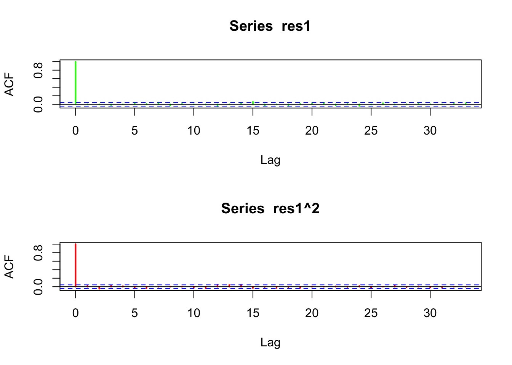
par(mfrow = c(1, 1))
# The Box-Ljung test is to test if there exists autocorrelation, the null is no autocorrelation. We use fitdf = 1 because we used AR(1) model earlier.
Box.test(res1, lag = 10, type = c("Ljung-Box"), fitdf = 1)
Box-Ljung test
data: res1
X-squared = 8.495, df = 9, p-value = 0.4851Box.test(res1^2, lag = 10, type = c("Ljung-Box"), fitdf = 1)
Box-Ljung test
data: res1^2
X-squared = 11.657, df = 9, p-value = 0.2333model1@fit$ics AIC BIC SIC HQIC
0.5658129 0.5798152 0.5658005 0.5709543 u1 <- pnorm(res1, mean = 0, sd = 1)[4:length(ret1)]
hist(u1)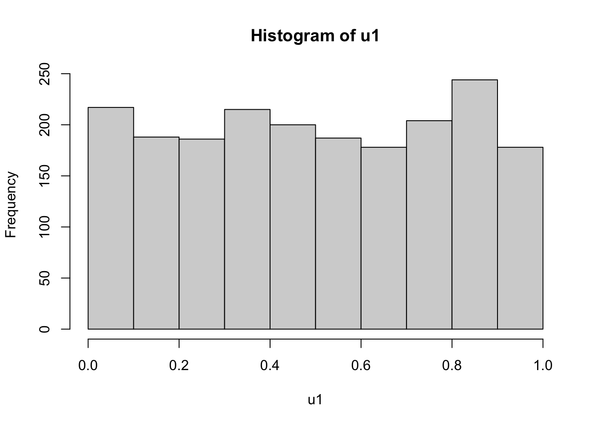
Further distributional checks:
#Kolmogorov-Smirnov test
KStest1 <- LcKS(u1, cdf = "punif")
KStest1$p.value[1] 0.418#Anderson-Darling test
ADtest1 <- ad.test(u1, null = "punif")
ADtest1$p.value AD
0.4202428 Returns 2
res2 <- residuals(model2, standardize = TRUE)
par(mfrow = c(2, 1))
acf(res2, col = "green", lwd = 2)
acf(res2^2, col = "red", lwd = 2)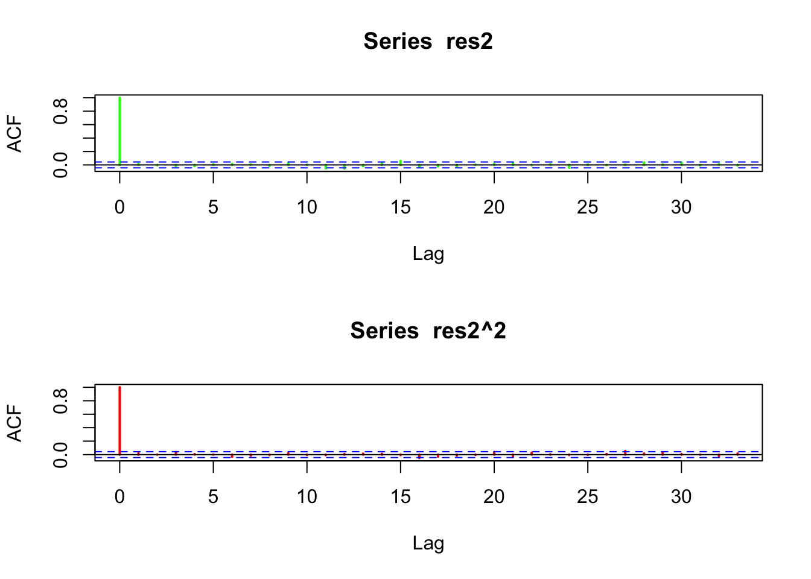
par(mfrow = c(1, 1))
# The Box-Ljung test is to test if there exists autocorrelation, the null is no autocorrelation. We use fitdf = 3 because we used AR(3) model earlier.
Box.test(res2, lag = 10, type = c("Ljung-Box"), fitdf = 3)
Box-Ljung test
data: res2
X-squared = 4.4836, df = 7, p-value = 0.7227Box.test(res2^2, lag = 10, type = c("Ljung-Box"), fitdf = 3)
Box-Ljung test
data: res2^2
X-squared = 7.5536, df = 7, p-value = 0.3736model2@fit$ics AIC BIC SIC HQIC
2.011268 2.030871 2.011244 2.018466 u2 <- pnorm(res2, mean = 0, sd = 1)[4:length(ret2)]
hist(u2)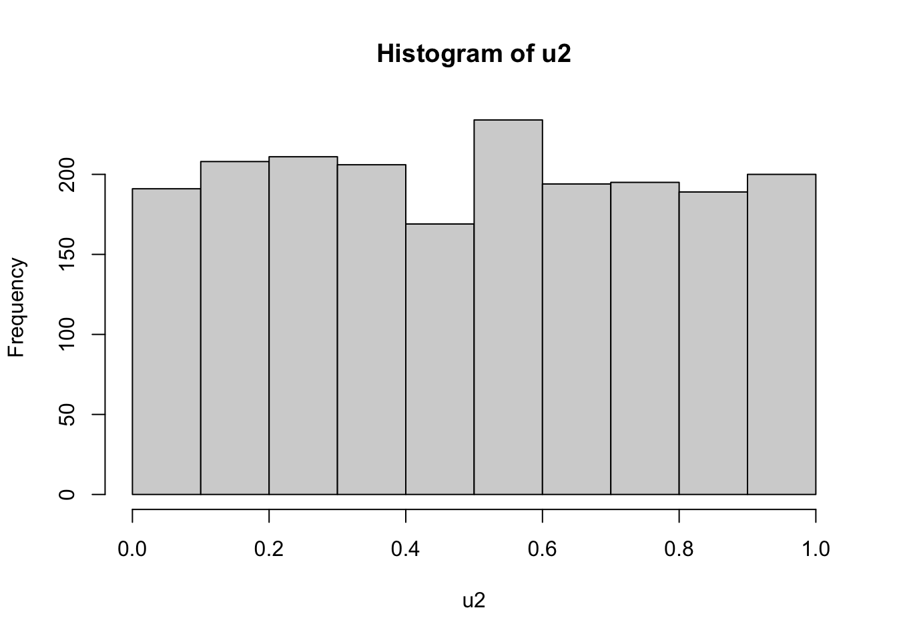
Further distributional checks:
#Kolmogorov-Smirnov test
KStest2 <- LcKS(u2, cdf = "punif")
KStest2$p.value[1] 0.6628#Anderson-Darling test
ADtest2 <- ad.test(u2, null = "punif")
ADtest2$p.value AD
0.880416 Misspecification Example 1: Using AIC and BIC
Let’s deliberately choosing the “wrong” AR(1) model instead of AR(3) model to show that the AIC and BIC are indeed helpful model selection criteria!
model2b <- garchFit(formula = ~arma(1,0) + garch(1,1), data = ret2, trace = F, cond.dist = "norm")
res2b <- residuals(model2b, standardize = TRUE)
par(mfrow = c(1, 2))
acf(res2b, col = "green", lwd = 2)
acf(res2b^2, col = "red", lwd = 2)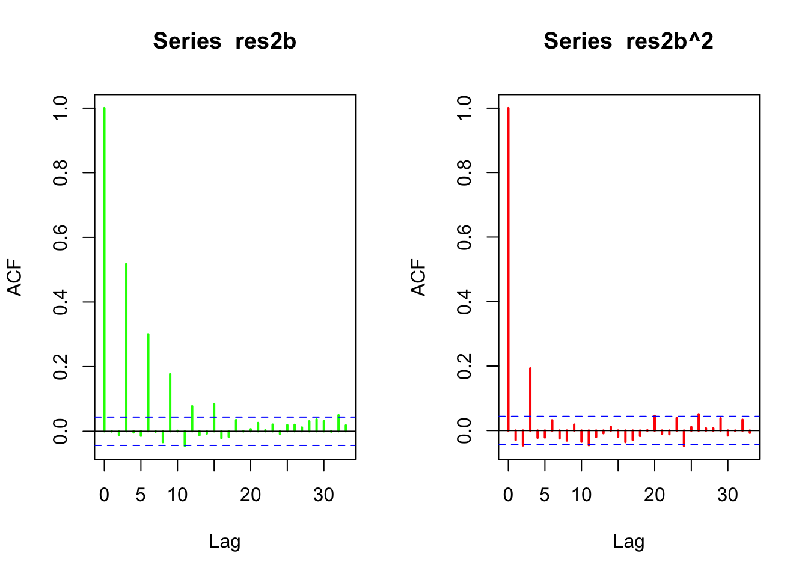
par(mfrow = c(1, 1))
Box.test(res2b, lag = 10, type = c("Ljung-Box"), fitdf = 1)
Box-Ljung test
data: res2b
X-squared = 784.15, df = 9, p-value < 2.2e-16Box.test(res2b^2, lag = 10, type = c("Ljung-Box"), fitdf = 1)
Box-Ljung test
data: res2b^2
X-squared = 90.379, df = 9, p-value = 1.332e-15u2b <- pnorm(res2b, mean = 0, sd = 1)
hist(u2b)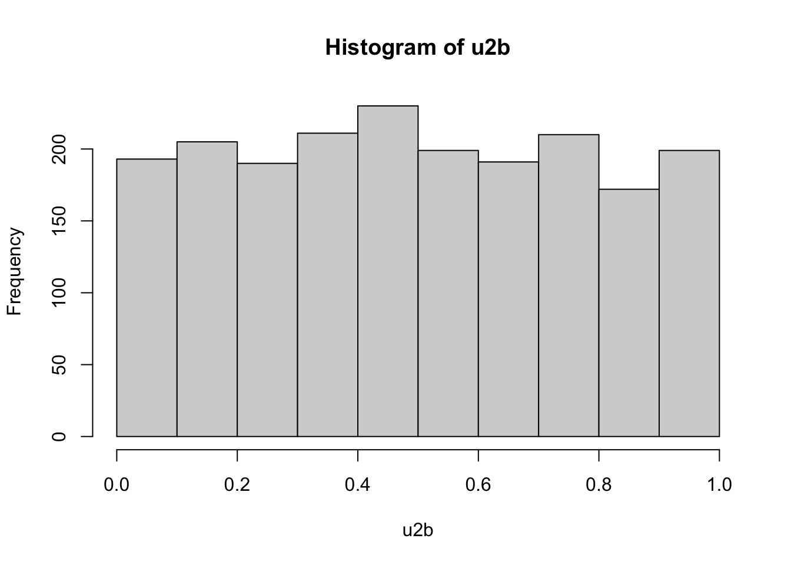
#Kolmogorov-Smirnov test
KStest2b <- LcKS(u2b, cdf = "punif")
KStest2b$p.value[1] 0.3402#Anderson-Darling test
ADtest2b <- ad.test(u2b, null = "punif")
ADtest2b$p.value AD
0.4864833 Misspecification Example 2: Using Student-t instead of Normal
Let’s deliberately choose the “wrong” Student-t distribution instead of a Normal distribution. We know that as the df parameter approaches infinity, the Student-t distribution approaches the Normal distribution. So for the sufficiently large value of (estimated) df parameter, we would not expect to see a big difference between the selection criteria.
model2c <- garchFit(formula = ~arma(3,0) + garch(1,1), data = ret2, trace = F, cond.dist = "std")
res2c <- residuals(model2c, standardize = TRUE)
par(mfrow = c(1, 2))
acf(res2c, col = "green", lwd = 2)
acf(res2c^2, col = "red", lwd = 2)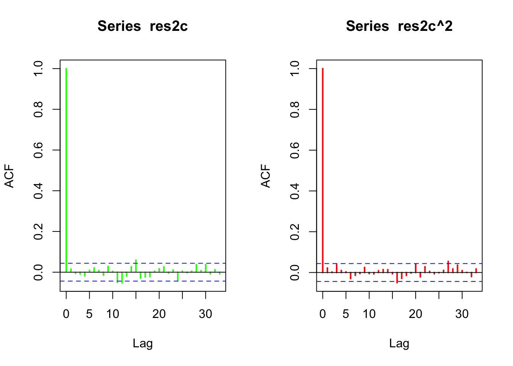
par(mfrow = c(1, 1))
Box.test(res2c, lag = 10, type = c("Ljung-Box"), fitdf = 1)
Box-Ljung test
data: res2c
X-squared = 4.7051, df = 9, p-value = 0.8592Box.test(res2c^2, lag = 10, type = c("Ljung-Box"), fitdf = 1)
Box-Ljung test
data: res2c^2
X-squared = 7.8925, df = 9, p-value = 0.545coef(model2c) mu ar1 ar2 ar3 omega alpha1
0.030941630 0.026238762 -0.004798470 0.561470633 0.009426896 0.094068483
beta1 shape
0.893152245 10.000000000 u2c <- pnorm(res2c, mean = 0, sd = 1)
hist(u2c)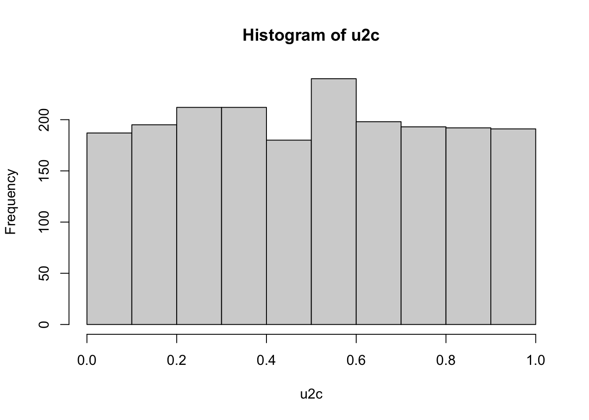
#Kolmogorov-Smirnov test
KStest2c <- LcKS(u2c, cdf = "punif")
KStest2c$p.value[1] 0.533#Anderson-Darling test
ADtest2c <- ad.test(u2c, null = "punif")
ADtest2c$p.value AD
0.5259121 Compare Three Models
ic <- rbind(model2@fit$ics, model2b@fit$ics, model2c@fit$ics)
rownames(ic) <- c("AR(3)", "AR(1)", "Student-t")
ic AIC BIC SIC HQIC
AR(3) 2.011268 2.030871 2.011244 2.018466
AR(1) 2.371386 2.385388 2.371373 2.376527
Student-t 2.019908 2.042311 2.019876 2.028134Let’s compare p-values for the KS and AD tests for uniformity:
dtests <- rbind(c(KStest2$p.value, ADtest2$p.value), c(KStest2b$p.value, ADtest2b$p.value), c(KStest2c$p.value, ADtest2c$p.value))
rownames(dtests) <- c("AR(3)", "AR(1)", "Student-t")
dtests AD
AR(3) 0.6628 0.8804160
AR(1) 0.3402 0.4864833
Student-t 0.5330 0.5259121Copula Modelling
model <- BiCopSelect(u1, u2, familyset = NA, selectioncrit = "AIC", indeptest = TRUE, level = 0.05, se = TRUE)
modelBivariate copula: Clayton (par = 3.01, tau = 0.6) Value-at-Risk uisng Monte Carlo simulation:
N <- 10000
u_sim <- BiCopSim(N, family = model$family, model$par, model$par2)Here we are assuming marginal models are N(0,1), completely ignoring our knowledge of real DGP
res1_sim <- qnorm(u_sim[,1], mean = 0, sd = 1)
res2_sim <- qnorm(u_sim[,2], mean = 0, sd = 1) However, “res1_sim” and “res2_sim” are i.i.d. So, the next step is to re-introduce autocorrelation and GARCH effects observed in data.
This section has been omitted as this will be part of your ICA group assignment…
99% and 95% VaR:
portsim <- matrix(0, nrow = N, ncol = 1)
varsim <- matrix(0, nrow = 1, ncol = 2)
portsim <- log(1+((exp(y1simulated) - 1) + (exp(y2simulated) - 1)) * (1/2))
varsim <- quantile(portsim, c(0.01, 0.05))
varsim